Environment Sampling and Evaluation
Environment Sampling and Evaluation
Environmental sensing usually requires substantial time for data collection or more distributed sensing systems. The use of atmospheric sensors is a major element in remote sensing (Carstens et al., n.d.). With a platform that can carry multiple types of sensors, a simple field scan can help understand the limitations of a drone task, and the potential for further operations. As an air monitoring solution, this demonstration can be extended to industrial-type solutions, such as air pollution monitoring (Deponte et al., 2015). All these factors show that drones form part of a trend towards service automation for industrial purposes.
We do remote sensing upon a UAV to simplify the task of environment sensing. A drone is equipped with remote sensors. It is flown in a field where it detects physical changes in the environment: lighting, humidity, and temperature. This data is then processed to determine the effectiveness of the survey. A presentation video is available (Google Drive) (Sørensen et al., 2017). The experiment data is available on Google Drive (Carstens et al., n.d.).
DAQ System Design
This section documents the design of the Atmosphere Data Payload selected in Section 1.3.1.3. It is composed of three stages.
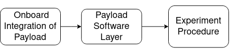
The payload is installed on the drone in Step 1. Flight procedures are designed in Step 2. The DAQ Activation is done in Step 3.
System for Low-Cost Sensors
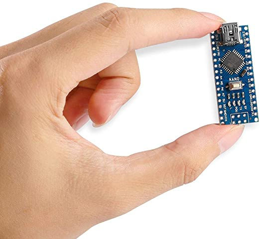
The Arduino sensor range is chosen for prototyping for its low-cost sensors. Using an Arduino Nano (Carstens et al., n.d.), such sensors can be easily integrated. The Arduino Nano is sold as a small, complete, and breadboard-friendly board based on Arduino’s larger counterpart, the ATmega328. It only weighs 7g with minimal volume.
Module Design
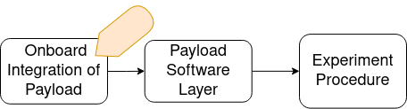
Two separate modules are designed for the Atmospheric Data and the Vibration Data. In each, an independent battery powers the logging unit, and the sensors attached to it. The Pixhawk board is included in the first system since some the GPS and luminosity sensor are logged via the Pixhawk board.
DAQ Control Layer
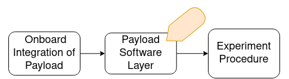
The DAQ is configured to activate and deactivate the datalogging process on command. To achieve this, we use custom activation firmware on the PX4 operating system.
| Boards | Switch | Activation | Deactivation | Prior to Activation | |
|---|---|---|---|---|---|
| 2. Arduino Nano | 2-2 | On boot | On shutdown | None | |
| 3. Pixhawk | 2-1 | On boot | On shutdown | None |
The data-logging activation file was coded in C++, and compiled into an executable via the MAVLink protocol. During operation, it toggles a pin (Pixhawk’s FMU Channel 6), which is then detected by the Arduino Nano in order to begin and end the logging on the Datalogger.
A separate custom logger detects Arduino activation and records its timestamp in the PX4 debug log.
Sensor System Evaluation
Aim
Using three separate atmospheric variables, we determine the accuracy of the drone sensing solution.
Prediction
Sunlit and shaded regions were scanned for relative humidity, luminosity and ambient temperature. The drone’s flightpath is changed randomly by the operator to create region overlaps. The trajectory plots demonstrate any inconsistencies in the readings. We determine the maximal variation per second and per meter as a measure of the fluctuations in lighting and in temperature.
Method
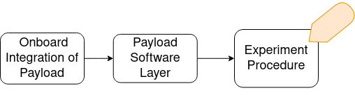
Measurement Equipment Setup Instruments that were used in the system are pictured in Figure [connections:arduino]. These include the DH11 Temperature and Humidity sensor, as well as a 5mm LDR Luminosity Sensor, and finally, the companion GPS. A particularity is that the DH11 is attached to the Arduino Board, and Logged with the use of an Arduino Data Logger, while the 5mm LDR is connected to an ADC input on the Pixhawk board, containing a self-enclosed data logger.
The Pixhawk logger supports 100Hz data logging while the Arduino data logger averages at 10Hz logging. Both data loggers support Micro SD cards with a capacity of up to 64GB to store high-resolution video data, photos and flight telemetry.
Experiment Procedure The flight takes place in an empty field of approximately 100x60m, identified for the differences in lighting between the tree shade and the sunlit field. The drone is piloted by hand. This requires a certain method:
System checks (battery monitor, screws, etc.)
Activating the drone.
Drone takeoff and moving to an altitude of 2m.
Altitude lock.
Activating the Arduino data acquisition with a PX4 trigger application.
Piloted flight across the field, along sunlit and shaded regions.
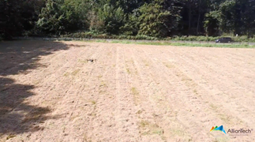
Data collection The data was collected on 24 August 2021, over an empty field of approximately 100x60m. Both the lighting and the GPS data are taken from the Pixhawk Log. They were both sampled at a frequency of 98 Hz. The Arduino Logger was activated 248s after the Pixhawk Logger. The Arduino Logger was active for a duration of 712 seconds, of which 464s are common to both boards. Both the temperature and the humidity are taken from the Arduino Datalogger. They were both sampled at a frequency of 11.7 Hz.
Dataset A presentation video is available (Google Drive) (“Arduino Documentation (Accessed 30 September 2021),” 2021). The experiment data is available on Google Drive (Carstens et al., n.d.).
Results
Timeline of Environment Sensor Readings There is a stark contrast between sunny and shady regions in the data.
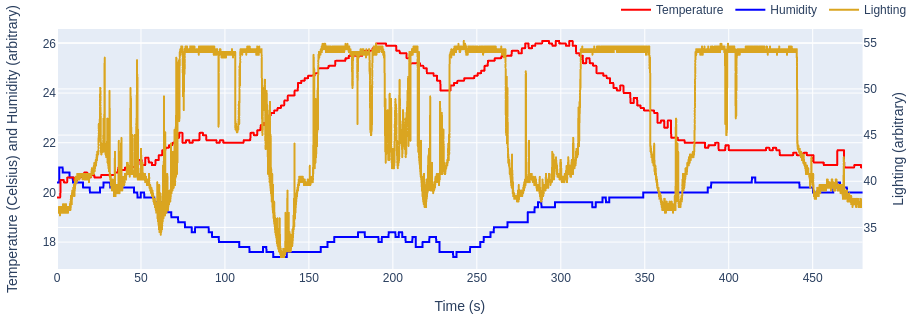
This is a change of 20% of the luminosity range, where sunny regions saturate the sensor, and shady regions are marked by sudden drops.
Trajectory Plot Figure [fig:lighting_field] plots the lighting readings over the trajectory.
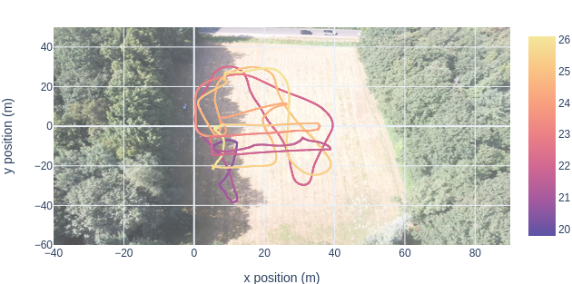
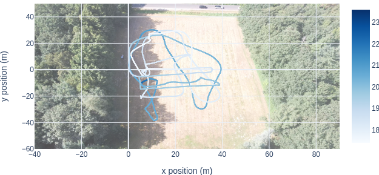
This confirms that the data is very sensitive to lighting differences. The darker patches in the sunlit area might be explained by the passage of clouds during the procedure.
A first graph presents the magnitude of the changes in light and temperature, by computing their rates of change over time. The magnitudes are normalized by their operating ranges: 20-90% of Relative Humidity for the DHT11 sensor, 20-150mV of ADC voltage for the LDR sensor.
$${\frac{\Delta{r}}} = {\frac{r_{f} - r_{i}}{r_{max}-r_{min}} * 100}$$
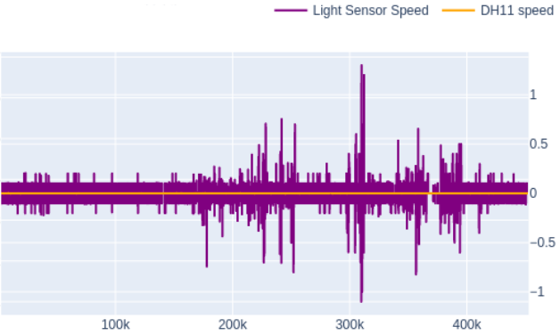
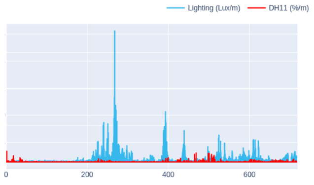
According to (a), the maximum values suggest that the LDR sensor records changes of vs the DHT11 sensor’s . The temperature and humidity vary less rapidly, and this is very apparent in the plots.
To better evaluate the sensing speed, we investigate the maximum fluctuations per second, and then per meter. This data recording speed is used in (b) in coordination with the drone velocity as recorded by the Pixhawk setup, in order to obtain fluctuations per meter, independent from speed. This is done with the following equations.
$${\frac{\Delta{r}}} = {\frac{r_{f} - r_{i}}{t_{f} - t_{i}}}* {\frac{1}{\bar{v}}}$$
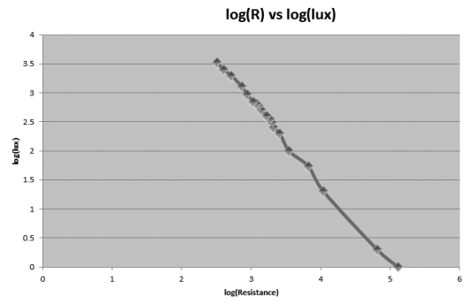
The following equation is taken from (Carstens et al., n.d.), whereas determines an empirical formula to convert the ADC voltage to lux for the Arduino’s Light Dependent Resistor module: log (Llux) = − 1.4 * log {max |Vadc|} + 7.098
Whereas the LDR sensor records , the DHT11 detects . This shows the range of local changes over the field and it seems reasonable for stark changes in light vs more gradual changes in humidity.
Discussion
The proposed UAV architecture has proven itself effective at capturing fluctuating environment data. When examining the luminosity readings, the measurements are very consistent with shade/light regions, by changes of as much as 20% of the luminosity range. Sunny regions saturate the sensor, and shady regions are marked by sudden drops. This suggests a high accuracy, especially seen as the drone was piloted by hand.
The luminosity plot demonstrates very precise readings despite the drone’s velocity. This is facilitated by rapid data logging at 100Hz. The fact that the drone was piloted by hand, on an arbitrary path with region overlaps, illustrates plainly how mobile mapping is a worthwhile tool for rapid data collection.
There is much less of a correlation between the readings and their position in space. We suggest two potential issues with the DH11 sensor:
Movement may affect the temperature and humidity. We recommend to further investigate how the readings vary with altitude, speed and acceleration.
Heat convection on the drone and the sensor itself may be recorded by the sensor instead of environment temperature. We recommend to further investigate how accumulated heat affect the readings.
Additionally, this experiment demonstrates that a payload drone can be extended to other types of sensors for other applications. The data acquisition setup proves to be functional. This setup was developed prior to the experiment with the goal to integrate many other types of sensors.
The flight was quite smooth and simple to undertake. As opposed to conventional means of environmental sensing (Williams, 2015), this flight requires no site preparation. This is largely due to the selected drone system, as well as the work done to automate the data acquisition procedures.
This procedure was greatly assisted by the datalogger, whereas GPS data and atmospheric data could be correlated without major issues. The correlation between different elements have uncovered a topography in an unexpectedly accurate manner. As we examine the systems that aid in practice, we note the importance of the drone as a platform for capturing scans of a 3 dimensional environment in a rapid, and timely manner. At the time of writing, Alliantech is compiling a marketing video for this environment sensing solution.
| Test Description | Findings |
|---|---|
| DHT11 | |
| DHT11 | |
| LDR | |
| LDR | |
| Range of Vibration Sensing System | 0- |
| Margin of Error up to Natural Frequency | 50% margin of error |